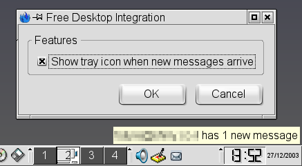

Mozilla New Mail Icon is an extension which displays an icon in the system tray when new mail arrives in your Mozilla or Mozilla Thunderbird . It supports the standard (FreeDesktop.org) system tray, as used by GNOME, KDE and IceWM.
This extension was previously called Mozilla Free Desktop Integration.

This extension is made of a binary XPCOM component (C++) and XUL files. It employs two Mozilla extension techniques: XPCOM implementation of a known CID, and XUL overlays.
The XPCOM component provides the nsMessengerFreeDesktopIntegration CID. Mozilla Mail tries to create a component with this CID and silently ignores if it doesn't exist, assuming the platform doesn't have any specific mail integration features. For example, the implementation on Windows adds a notification icon and updates Windows XP' Unread Mail count. That way, we can easily provide support for our platform with an "outside" extension. (If only all things in Mozilla could be so easily extended...). The nsMessengerFreeDesktopIntegration interface is not frozen and might (though unlikely) change in future Mozilla versions. The interface itself doesn't have any members: it's simply a way for us to bootstrap (using NS_GENERIC_FACTORY_CONSTRUCTOR_INIT) whenever Mozilla Mail opens and to sign up as a folder observer and wait for BiffState changes. The tray icon GTK code was taken from libegg.
The XUL files integrate into Mozilla's Preferences (with XUL) and provide a Settings dialog for Thunderbird's Extensions dialog.
The build process required writing some custom code: a custom mozilla-config script which provides some information not available from the stock mozilla-config and a bunch of Makefiles to facilitate building the binary component and the XPI package. Unlike most XPIs, this XPI script tries to pick the right binary component for your platform, if available. That way, the XPI can ship with binary components pre-compiled for multiple platforms.
As if often is with Mozilla-based projects, I have stumbled on some bugs and shortcomings which hindered the functionality of this project:
As they are resolved, I'll fix the extension to work even better.